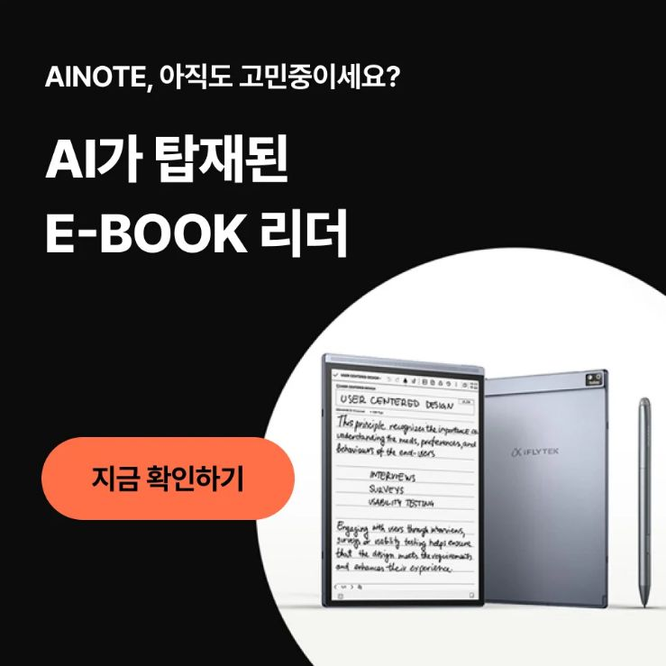

Capture
Stay present in meetings and conversations instead of splitting attention between listening and typing.
Selected case study
AINOTE combined a paper-like writing experience, handwriting conversion, meeting transcription, multilingual tools and information management. A full feature list felt technical; calling it an e-ink tablet made it sound familiar but interchangeable.
I led Korea GTM, localization and market decisions—connecting HQ product facts, local consumer language, commercial targets and partner execution into one launch system.
Consumer insight
The audience did not need another device
Launch and search data pointed to knowledge professionals whose work depended on meetings, documentation and multilingual communication.
Stay present in meetings and conversations instead of splitting attention between listening and typing.
Turn handwriting and voice into searchable, usable records without adding another admin task.
Move between markets and teams with fewer breaks in the workflow.
Naver interest clustered around AI, e-ink and e-reader themes. Education and real use cases helped shift the conversation from novelty to usefulness.
Creative direction
The strategic shift
Working with WadizX, we moved away from a long list of AI specifications and built a consumer-facing launch story around a simpler, more useful promise. I pressure-tested the story for Korea and kept every claim tied to real product value.
Claim design
Clarified that the number referred to handwriting conversion—not every AI function.
Separated handwriting-to-text language coverage from live translation.
Corrected the pressure-sensitivity description and removed unsupported behavior claims.
The principle: make the story persuasive without overstating what the product can do.
Platform strategy
A connected launch system
The value came from the handoff between attention, product education, trust and conversion—not from treating every placement as a separate campaign.
Paid social · Creators · Wadiz · Naver
Introduced the problem, demonstrated use cases and built a high-intent reminder pool before the page opened.
Wadiz · Paid media · PR
Converted demand with product proof, visible momentum and a clear reason to act.
Creators · Tutorials · Search
Turned technical functions into lived examples and carried the learning into the next launch.
Creative experimentation
The strongest pre-launch social creative showed that the proposition could drive action before the funding page opened.
A scarcity hook won the click. A quieter product story did more of the commercial work. We assigned creative roles by funnel stage instead of judging every asset by CTR.
Scarcity-led

Product-forward
The first wave generated almost three times the GMV of the encore wave, even as the encore delivered a higher average order value. Urgency could not replace a clear sense of usefulness.
Encore AOV +11%
Business impact
Documented results
Winning main-phase social assets delivered 6.82× and 6.61× attributed ROAS. Naver content generated 34,793 views during the first launch period.
I connected HQ product facts, Korean consumer language, commercial targets, agency execution, platform inventory and creator feedback. My role was to make sure every team was solving the same market problem.
Agency and platform partners supported production, media and execution; I owned strategic direction and Korea-market decisions.
The takeaway
“Urgency works only after value is clear.”
High CTR did not always mean high commercial value. For a new hardware category, the strongest answer was not one hero asset but a sequence: introduce the problem, show the product in use, add proof, then create a reason to act.
Korea GTM · Creative strategy · Social commerce
↓ 02 · Gucci Cruise 2024 · SeoulKorea strategy · Live experience · Cross-platform activation
→ 03 · Adobe Korea · 2021–2022Culturalization · Social-first growth · Creative experimentation
→ 04 · LG Electronics · Global · 2021–2022Global GTM · Audience strategy · Full-funnel planning
→ 05 · Loewe Korea · 2022Local ecosystem · Luxury commerce · Channel strategy
→ 06 · Netflix · Social Data & InsightsAudience intelligence · Fandom research · Social-first planning
→I am a Korea-based marketer working across cultural insight, creative strategy, platform behavior and commercial growth. My experience spans AI hardware, technology, luxury and entertainment brands in Korea and global markets.
LinkedInLet's talk